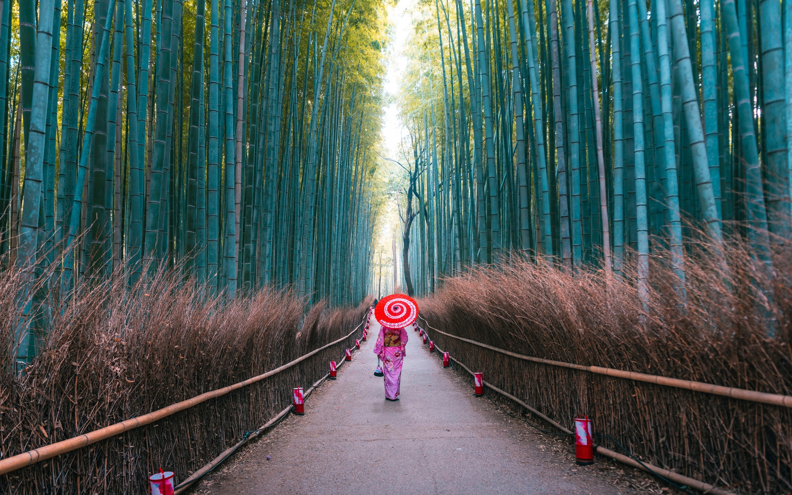
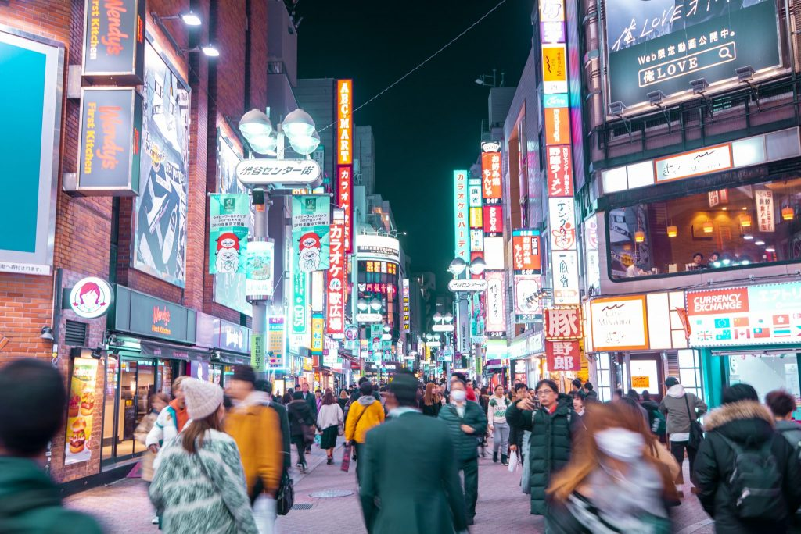

Japan is considered to be one of the safest countries in the world, and has one of the lowest global crime rates. Japanese people often leave their doors unlocked, children are perfectly safe traveling on the subway by themselves, and visitors are able to walk around the cities at night without having to worry.Most people travel to Japan from overseas by plane. If you plan to fly to Japan you are most likely going to arrive at Narita Airport, Haneda Airport or Kansai Airport or increasingly into Chitose International Airport in Sapporo, Hokkaido. The most efficient way to travel around most of Japan is by train. Whether you're being whisked through the countryside aboard the famous Shinkansen bullet train or are winding your way up a wooded mountainside in an electric streetcar, trains in Japan are punctual, comfortable, safe, and clean.

Located on Japan's northernmost island, Hokkaido, the city of Sapporo offers many things to do for tourists. It is famous for its beer, skiing and annual Sapporo Snow Festival featuring enormous ice sculptures. The Sapporo Beer Museum traces the city’s brewing history and has tastings and a beer garden. As the island's largest city, it's a hub of cultural activity, hosting many excellent events and festivals. It also has a distinctive culinary style, a rich theatrical history, and plenty of museums, galleries, and parks.

One of Japan's most visited cities, lovely Kyoto - one of the few cities in the country to be spared the devastation of WWII - attracts more than 10 million visitors annually. Most of them are here to explore Kyoto's fine old streets and architecture, much of it unchanged since the Imperial family took up residence here more than 1,000 years ago. Even then, the city was Japan's most important cultural center. This legacy, in fact, continues to this day with its many museums and art galleries, each bursting with important sculptures, paintings, and other art forms.

Shibuya is famous for its scramble crossing, called Shibuya Crossing. It is located in front of the Shibuya Station Hachikō exit and stops vehicles in all directions to allow pedestrians to inundate the entire intersection. Shibuya, Tokyo is a one-stop destination for attractions, food, and an unimaginable amount of shopping. passengers are already welcomed with a plethora of underground shopping options.